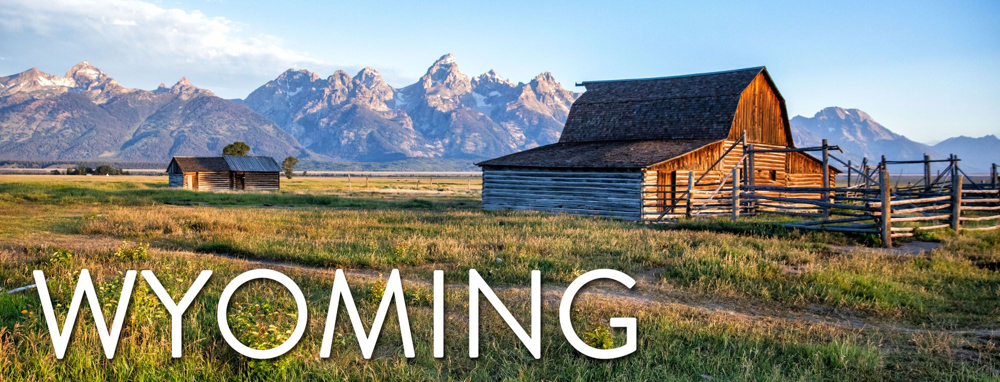

About Me
Hello! My name is Dale McBride. I am from the great state of Wyoming. This is my third semester at BYU - Idaho and I have really enjoyed my time here. I have always had an interest in computers and have known that programming is something that I want to pursue. I grew up playing sports since I was little. I played football, basketball, and I ran track. My favorite out of them is basketball. I also really like archery and have been doing that for a couple years now.
Wyoming with a population of about half a million for the entire state. It doesn't have a shortage of wide open spaces. It has a large mountain ranges that have an abundance of wildlife. Wyoming plays a large part of the energy production with large coal and natural gas facilities. The states identity and culture is based a lot on the cowboy. Cattle ranches are everywhere throughout Wyoming. The cowboy culture is celebrated with rodeos and brandings.